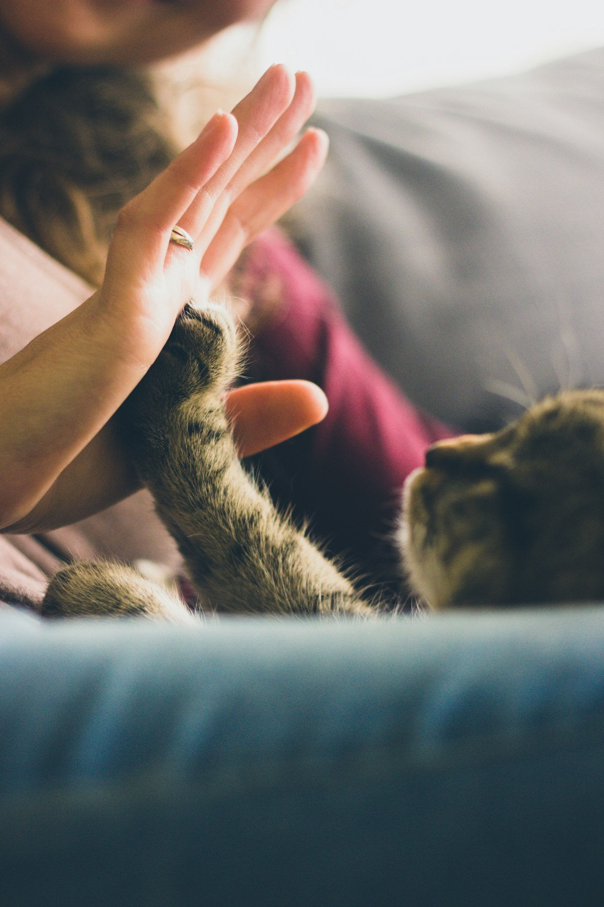

Consulta y tienda para tu mascota en Santa María Nativitas
Consulta, vacunas, esterilización y todo lo que tu perro o gato necesita: alimento, medicamento y accesorios en un solo lugar.

Consulta, vacunas, esterilización y todo lo que tu perro o gato necesita: alimento, medicamento y accesorios en un solo lugar.
Atención médica y productos para tu mascota.
Diagnóstico y seguimiento post-tratamiento.
Esquemas para perros y gatos.
Y cirugías menores.
Alimento, medicamento, accesorios y hábitats.
Interna y externa.
Baño para tu mascota.
Nuestros pacientes consentidos.


Fotografías de stock para la propuesta; se reemplazarán por fotos reales de la veterinaria.
Dra. Julieta Infante y equipo.
En Veterinaria La Rana atendemos a los perros y gatos de Chimalhuacán con dedicación y conocimiento. Además de la consulta, tenemos una tienda bien surtida para cubrir las necesidades diarias y preventivas de tu mascota.
Lo que valoran nuestros clientes.
“La Dra. Julieta se las sabe de todas para tratar a tu mascota; vale la pena la espera.”Reseña representativa
“Muy surtido y con buenos precios; revisan la caducidad de los medicamentos.”Reseña representativa
“Esterilizaron a mi gatita y se recuperó muy bien. Trato amable.”Reseña representativa
Reseñas representativas basadas en temas de opiniones públicas; se reemplazarán por reseñas reales.
Resolvemos tus dudas.
Lunes a sábado de 9:30 a 19:00; los domingos permanecemos cerrados.
Atendemos por orden de llegada; escríbenos por WhatsApp para saber el tiempo de espera.
Sí, realizamos esterilización y cirugías menores con valoración previa y seguimiento.
Sí, contamos con amplio surtido de alimentos, medicamentos, accesorios y hábitats, revisando siempre la caducidad.
Sí, programamos revisiones para confirmar que tu mascota evoluciona bien.
Visítanos.
DirecciónAv. Francisco I. Madero 48, Santa María Nativitas, 56335 Chimalhuacán, Edo. Méx.
Teléfono / WhatsApp56 2173 2601
HorarioLun–Sáb 9:30–19:00 · Domingo cerrado